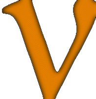

SNEWS News
-
February 2003: Sky
and Telescope test of AstroAlert system.
-
March 2003: Sky
and Telescope AstroAlert results.
-
October 12, 2003: SNEWS featured in Earth
and Sky segment.
-
February, 2004: SNEWS server moved to Brookhaven
National Lab.
-
June 8, 2004: SNEWS technical paper posted at astro-ph/0406214.
-
July 10, 2004: News article on SNEWS featured in New
Scientist news article, July 10 issue, p.13 (print edition).
-
September 1, 2004: SNEWS technical paper published in New
Journal of Physics, available online at doi:10.1088/1367-2630/6/1/114.
-
June 3, 2005: Article on SNEWS published in Astronomy
Magazine Online, available here.